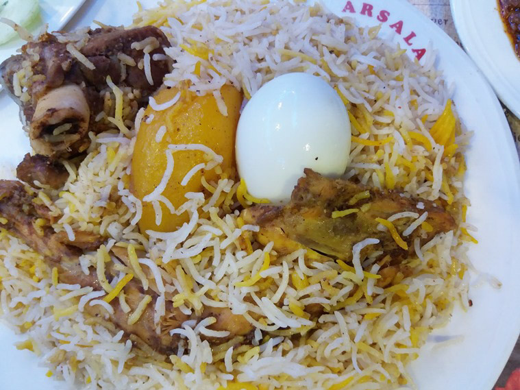
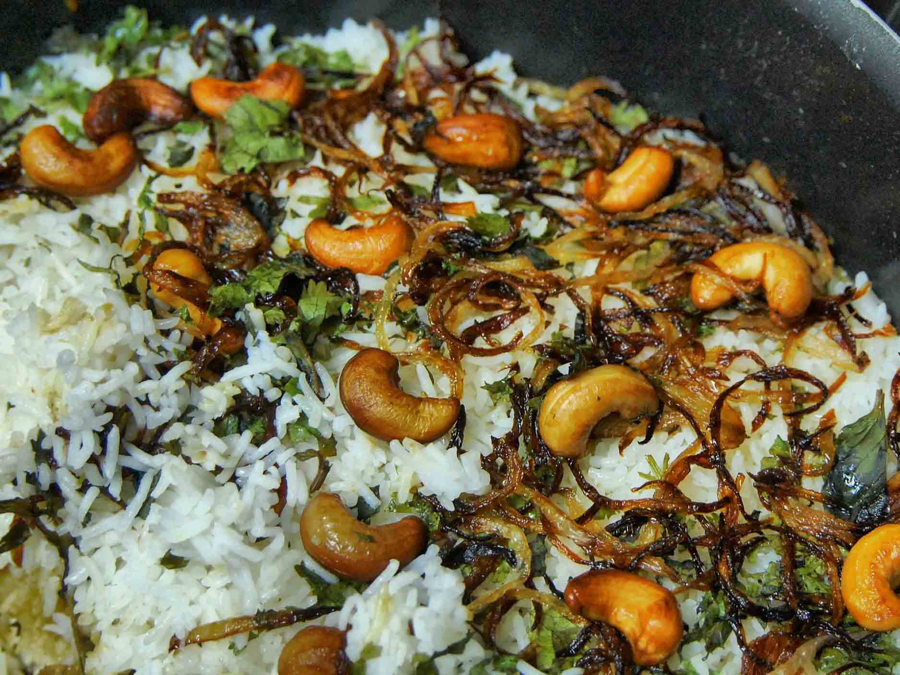
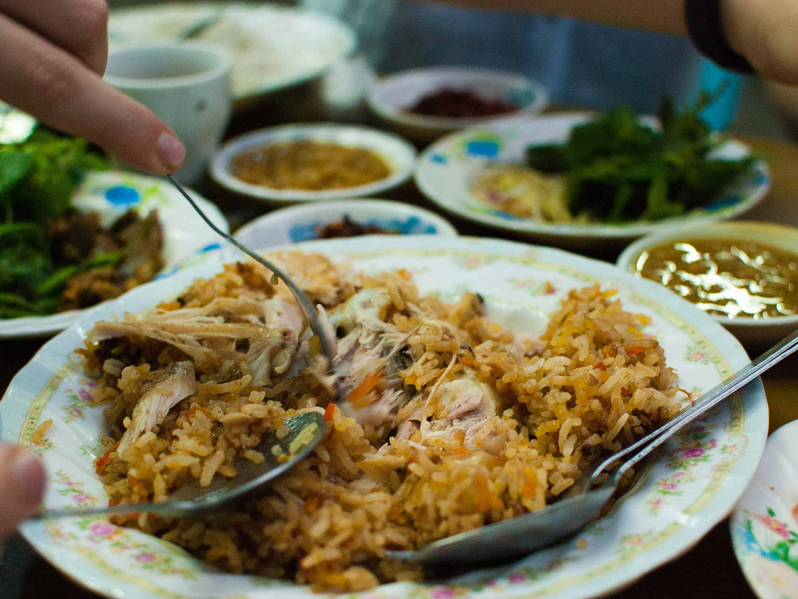
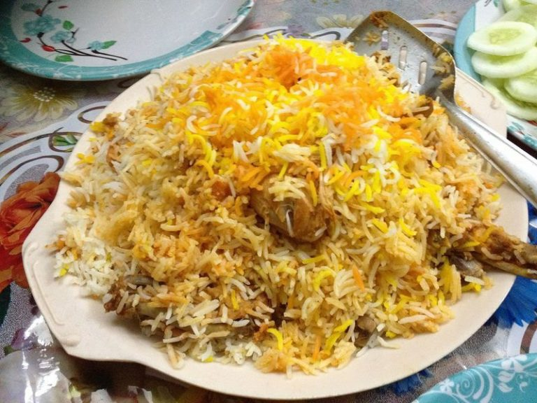
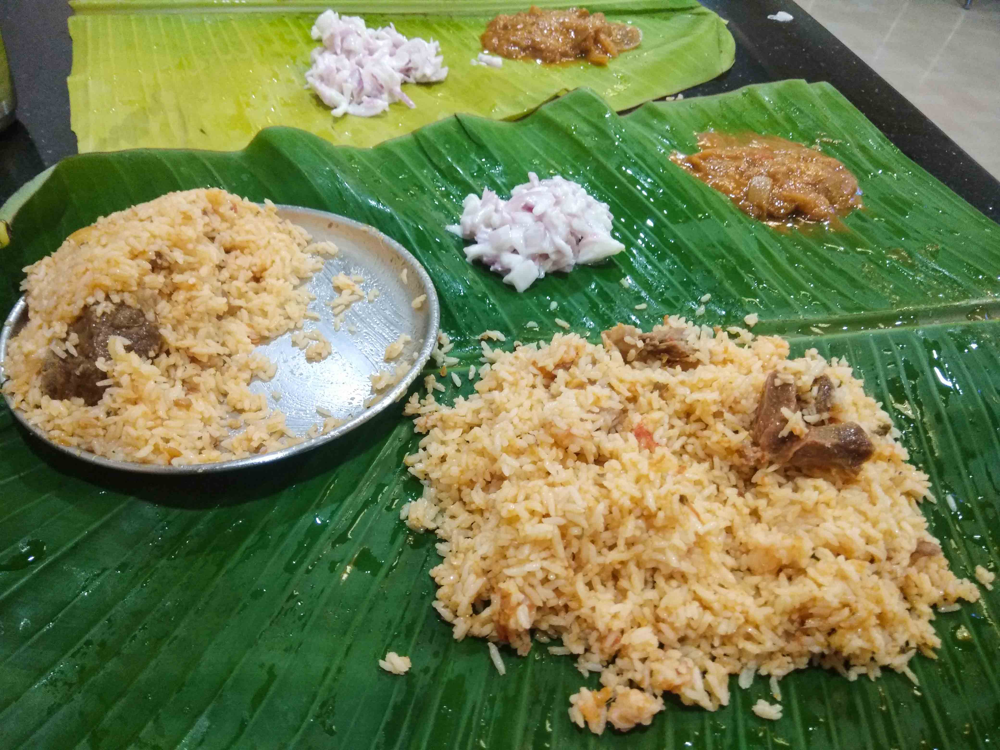
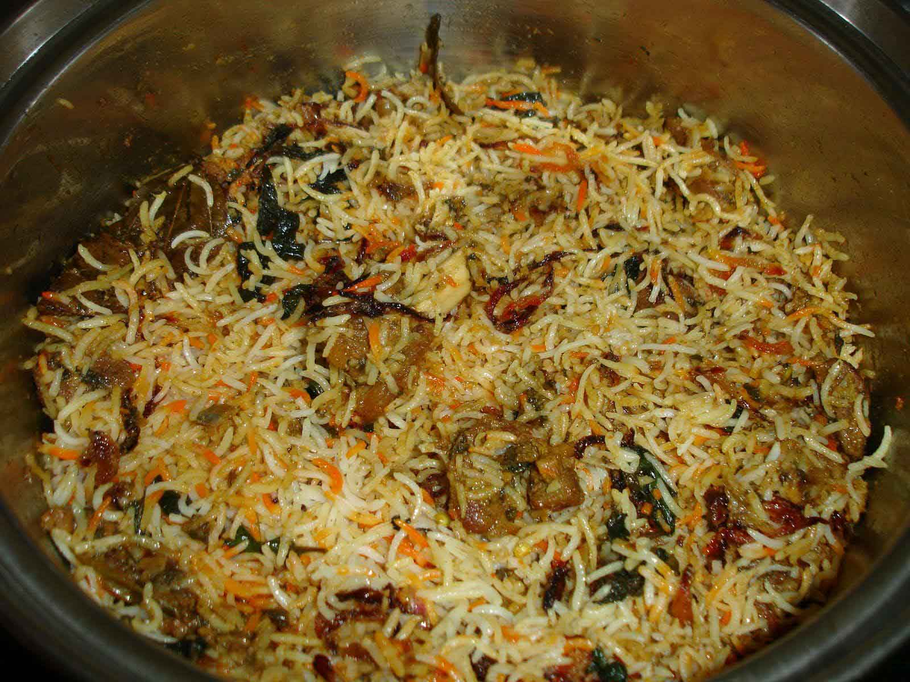
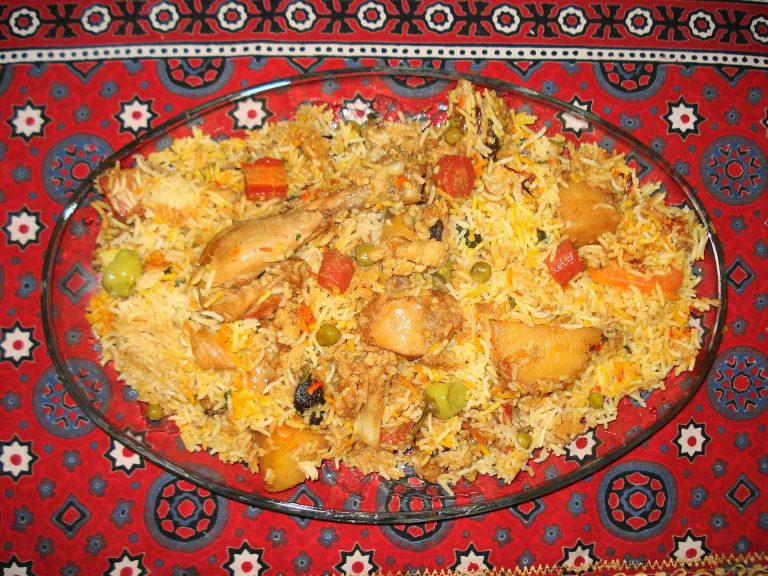
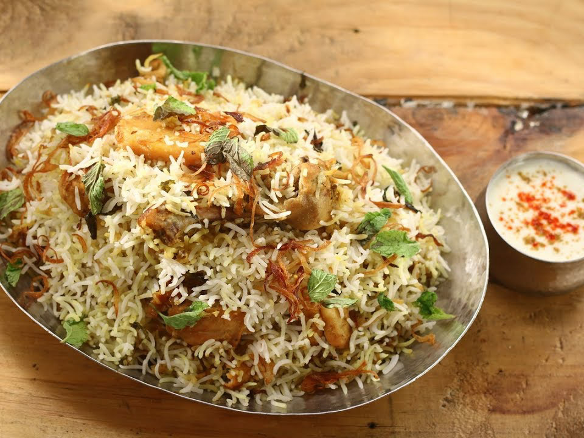
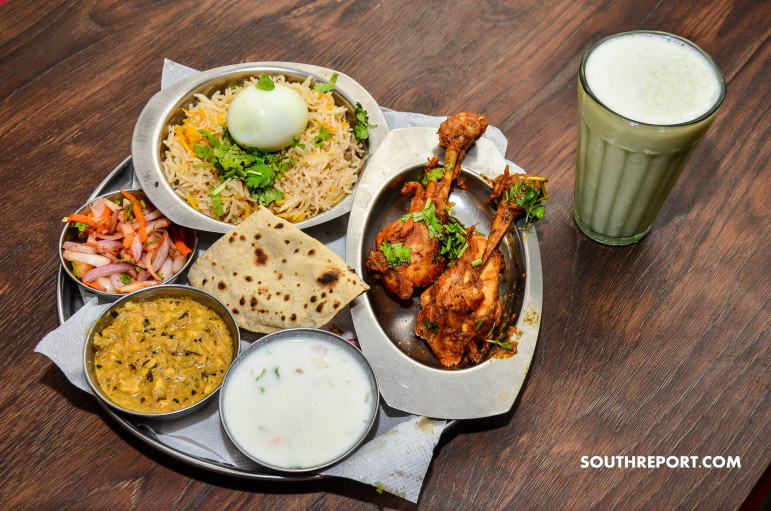
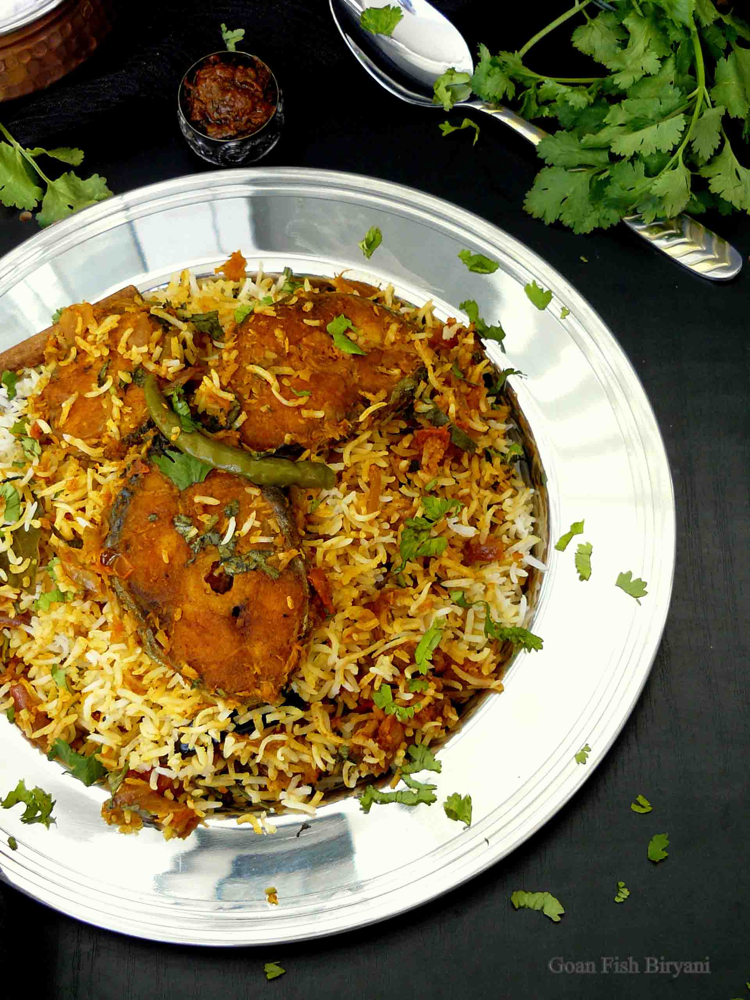

Kashmiri Biryani:
Kashmiri biryani is more like a pulao, but it is cooked in the same style as other biryanis, for a long period of time,
but with different spices. It is sweeter, with no garlic and not onion.
Hyderabadi
Hyderabadi biryani: This is one of the most popular forms of biryani in India.
The chicken pieces are marinated and cooked alongside the rice,
and it is seasoned with coconut and saffron.
Kolkata

Calcutta/Kolkata biryani: This biryani consists of potatoes and eggs, with some meat thrown in for good measure.
The marinade contains cardamom, cinnamon, cloves, nutmeg, and other spices,
and the rice is flavored with ketaki or rose water and is golden in color.
Thalassery/Malabar

Malabar Biriyani: This is the only type of biryani available in Kerala, India.
It is a favourite meal among the Malabar Muslim population and is made using Khyma, ghee and rice.
Mughlai

Mughlai biryani: This richly flavored biryani is made with curd, almond paste, chicken, ghee,
green chilies and dried fruits.
Awadhi

Lucknowi Biryani:
Straight from the streets of Lucknow, Lucknowi biryani is comparatively milder on spices yet offers a distinguished
and flavoursome taste.Also known as the ‘Awadhi biryani’ (Awadh – The present day Lucknow and Home to Mughals who
ruled for more than 300 years), the Lucknowi Biryani has its unique cooking style, known as “dum pukht”, where the
meat and rice are half cooked separately and then cooked together again to give that essence of flavour and the perfection
that’s just needed.Many claim that “Lucknowi or Awadhi Biryani” is the first appearance of biryani in India
Ambur

Ambur Biryani: – Ambur Biryani is a must on your bucket list if you visit Tamilnadu. Originated from the arcots of Nawab kitchens,
Ambur biryani has a typical South Indian twist in its preparation. This unique dish is prepared in dried chilli paste and whole spices.
Brinjal masala is the perfect side-dish for this mouthwatering biryani. The meat is soaked in curd and flavoured with coriander and mint,
and then added to the cooked Seeraga samba rice, along with other spices – The whole process makes the meat chunkier and tender.
Beary

Beary Biryani:
Mangalorean Muslim style biryani, as it is often called (Concentrated mostly in the coastal region of Dakshina Kannada),
it is simple in preparation – light and less spicy, flavoured with ghee.
Kamrupi

Kamrupi Biryani:
A lesser known version, Kamrupi Biryani originates from the Muslim town of Assam.
There is a lot of added vegetables like peas, carrots, potatoes, capsicums and beans with spices to the meat.
Memoni

Sindhi, Bohri and Memoni Biryanis:
These trio of biryanis were created by communities in Gujarat, India and Sindh, Pakistan.
Bohri Biryani is rich fragrant and has a characteristic sweet – sour flavour.
It is very popular in Karachi and North India.
Bombay

Bombay Biryani:
Bombay Biryani is adapted from the Irani biryanis that is eaten with a meat gravy.
It is typically sweeter – The addition of kewra water, dried plums make the flavour unique,
tangy and aromatic. Similar to Kolkata Biryani, Bombay Biryani also has addition of potatoes at times and is milder.
Goan Fish

Goan Fish Biryani:
Goa is a sea-food lover’s destiny – If you are a biryani fan, Grabbing a Goan Fish biryani is a must to relish
your Goan trip with coolness(& spiciness).